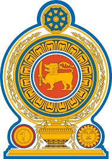

YLON
- Travel
- Religion
- Home
- Others
Sri Lanka is a multi-ethnic, multi-religious and multi-cultural society, a reflection of the island’s encounter with successive foreign immigrants. But it all began with indigenous people, the Veddahs, hunter-gatherers who exist today.
The main ethnic groups are the Sinhalese and Tamils, both originally from the Indian subcontinent. Then there are Muslims, who settled in the island from the time it became an ancient trading centre. Similarly, Malays and Chinese were also attracted to the island.
|  |
The National Emblem of Sri Lanka is used by the State of Sri Lanka and the Sri Lankan government in connection with the administration and government of the country. The current emblem has been in use since 1972 and created under the ideas and guidance of Nissanka Wijeyeratne. At the time, he was Permanent Secretary to the Ministry of Cultural Affairs and Chairman of the National Emblem and Flag Design Committee. The designer of the emblem was Venerable Mapalagama Wipulasara Maha Thera, and the artwork was by S. M. Seneviratne. |
|
Sri Lanka Population
21,942,317- According to the 2012 census the population of Sri Lanka
was 20,359,439, giving a population density of 325/km2.
The population had grown by 5,512,689 (37.1%)
since the 1981 census (the last full census), equivalent to an annual
growth rate of 1.1%.[7] 3,704,470 (18.2%) lived in urban sectors - areas
governed by municipal and urban councils.
|
Area
65,610.2 km2- The nation has a total area of 65,610 square kilometres (25,330 sq mi),
with 64,630 square kilometres (24,950 sq mi) of land and 980
square kilometres (380 sq mi) of water.
Its coastline is 1,340 kilometres (830 mi) long.
The main island of Sri Lanka has an area of 64, 058 km2;
it is the twenty-fifth largest island in the world by area.
Dozens of offshore islands account for the remaining 1552 km2 area
|
Religion
in Sri Lanka
- Buddhism
- Hinduism
- Islam
- Christianity
|